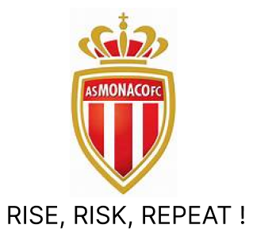
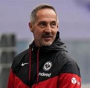

The AS Monaco club was founded in 2000. The national team played its first international match in 2001. The MFA association "Monaco Football Association" is no longer a member of FIFA, so it cannot participate in the Football World Cup. A notable result of the season was her run in the 2006 Viva World Cup, where she reached the final. Their colors are red and white.

Club president :
Dmitri Rybolovlev
He has been president since December 21, 2016.

Trainer:
Adi Hütter
He has been a coach since July 4, 2023.
| National competitions |
|---|
| French Championship: champion: 1961, 1963, 1978, 1982, 1988, 1997, 2000, 2017 |
| runner-up: 1964, 1984, 1991, 1992, 2003, 2014, 2018 |
| French D2 Championship: champion: 2013 |
| runner-up: 1953, 1971, 1977 |
| Coupe de France: winner: 1960, 1963, 1980, 1985, 1991 |
| finalist: 1974, 1984, 1989, 2010, 2021 |
| Champions Trophy: winner: 1961, 1985, 1997, 2000 |
| League Cup: winner: 2003 |
| finalist: 2001, 2017, 2018 |
| Charles Drago Cup: winner: 1961 |
| International competitions |
|---|
| UEFA Champions League: Runner-up: 2004 |
| Cup Winners' Cup: 1992 runner-up |
| UEFA Cup: semi-finalist: 1997 |